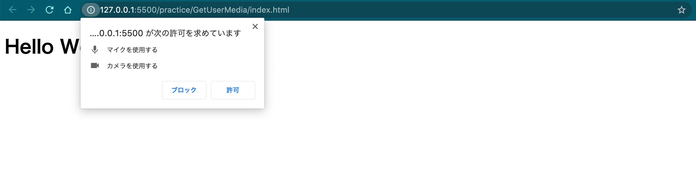

皆さんには
Discordみたいなやつ
各講義時間だけで作るのは不可能なので
各講義では基礎となる技術を一緒に学んでいきます
講義じゃない日などを使って
追加機能の開発をしてもらえたらなと
講師陣 (というかVGエンジニア全員) は
質問してくれたら喜んで一緒に考えてくれる (はず) なので
講義じゃない日もどしどし連絡ください！
ということで今日はフロントエンドを楽しんでいきましょう！
今日の資料はこちら
https://voyagegroup.github.io/treasure-javascript-2020/
ざっくり今日の講義の流れの紹介
(大体11時15分くらいだと過程)
JavaScriptを知ろう
（大体13時半くらいだと過程）
JavaScriptを触ってみよう
（大体15時半くらいだと過程）
実際にJavaScriptでサービスを作ってみよう
午前中は軽めにコミュニケーション取りながらやっていきましょう
改めて午前中話すこと
まずは質問
JavaScript 好きな人
講義の中でいうとフロントエンドが一番得意だなって思う人
午後はソースコードを交えつつ、理解を深めていきます！
改めて午後やること
JavaScriptは色々と不思議な動きをする言語なので
しっかり動作確認をした上で確かめていきましょう
let bar = "hoge"; // 文字列 console.log(bar); // hoge bar.toUpperCase(); // <- エラー起きない？ console.log(bar); // ???
なにが起きているのか
https://jsfiddle.net/ryokosuge_vg/bv3zrpm5
null
undefined
let bar = "hoge"; // 文字列 bar.length; // プロパティ bar.toUpperCase(); // メソッド
let bar = "hoge"; // 文字列 new String(bar).length; // プロパティ new String(bar).toUpperCase(); // メソッド
const foo = { bar: 'hoge' }; console.log(typeof foo); // object foo.bar = 'hogehoge'; console.log(foo.bar); // hogehoge const bar = foo; bar.bar = 'hoge'; console.log(bar.bar); // hoge console.log(foo.bar); // ???
https://jsfiddle.net/ryokosuge_vg/vkjL7mr3
branch切ってPR出してください
https://github.com/voyagegroup/treasure-javascript-2020/tree/master/practice/primitive-object
<!DOCTYPE html> <head> <title>event loop</title> </head> <body> <script> let i = 0; let start = Date.now(); function count() { do { i++; } while(i % 1e9 !== 0); alert("Done in " + (Date.now() - start) + 'ms'); }; count(); </script> </body> </html>
function count()
count()
<!DOCTYPE html> <head> <title>event loop</title> </head> <body> <script> let i = 0; let start = Date.now(); function count() { do { i++; } while(i % 1e6 != 0); if (i === 1e9) { alert("Done in " + (Date.now() - start) + 'ms'); } else { setTimeout(count); // setTimeoutでスケジュールする } }; count(); </script> </body> </html>
https://github.com/voyagegroup/treasure-javascript-2020/tree/master/practice/event-loop
setTimeoutの動きでおすすめのサイトがあるので一緒に見てみましょう
https://dev.to/lydiahallie/javascript-visualized-event-loop-3dif
こんなのダサいよね
doAsyncTask1(function(result) { doAsyncTask2(result, function(newResult) { doAsyncTask3(newResult, function(finalResult) { console.log('final result: ' + finalResult); }, failureTask); }, failureTask); }, failureTask);
こうできる
doAsyncTask1().then(function(result) => { return doAsyncTask2(result); }).then(function(newResult) => { return doAsyncTask3(newResult); }).then(function(finalResult) { console.log('final result: ' + finalResult); }).catch(failureTask);
ECMAScript2017で追加された async / await使うとこうできる
(async function(){ try { const result = await doAsyncTask1(); const newResult = await doAsyncTask2(result); const finalResult = await doAsyncTask3(newResult); console.log('final result: ' + finalResult); } catch(error) { failureTask(error); } })();
https://github.com/voyagegroup/treasure-javascript-2020/tree/master/practice/promise
おすすめ文献
早めに終わっちゃった人は読んでみてください！
https://dev.to/lydiahallie/javascript-visualized-promises-async-await-5gke
これに関しては後ほど触るので概念だけの説明
audioとvideoを指定する場合
const mediaStream = await navigator.mediaDevices.getUserMedia({ audio: true, video: true })
videoの制約を指定する場合
const mediaStream = await navigator.mediaDevices.getUserMedia({ audio: true, video: { width: 1200, height: 800 } })
https://github.com/voyagegroup/treasure-javascript-2020/tree/master/practice/get-user-media
<!-- index.html --> <!DOCTYPE html> <head> <meta charset="utf8"> <meta name="viewport" content="width=device-width, initial-scale=1.0"> <title>GetUserMedia</title> </head> <body> <h1>Hello World!</h1> <video id="my-video" width="400px" autoplay muted playsinline></video> <script src="index.js"></script> </body> </html>
// index.js (async function() { const localStream = await navigator.mediaDevices.getUserMedia({ audio: true, video: true }); const videoElement = document.getElementById('my-video'); videoElement.srcObject = localStream; videoElement.play(); })();

さらにこれを許可したら自分の顔がポッと表示されるはず
この処理はブラウザでカメラ / マイクの許諾を取る際に絶対に必要な処理なので、紹介しました！
おかし後は実際に1on1で音声通話出来るサービス作っていきます
フロントエンドのみで構築していくので、色々世に公開されているサービスを使っていきたいと思います
https://webrtc.ecl.ntt.com/
無料でアカウント作れるので、一緒に作っていきたいと思います
困った段階で手を止めるので、ぜひ声出してください！
これでSkywayの準備は万端
次にVisual Studio CodeのLive Serverを用意していきます
改めておかし後にやること
一緒にドキュメントを読みながら進めていこういきます
このrepositoryをcloseしてください
https://github.com/voyagegroup/treasure-javascript-2020-skyway